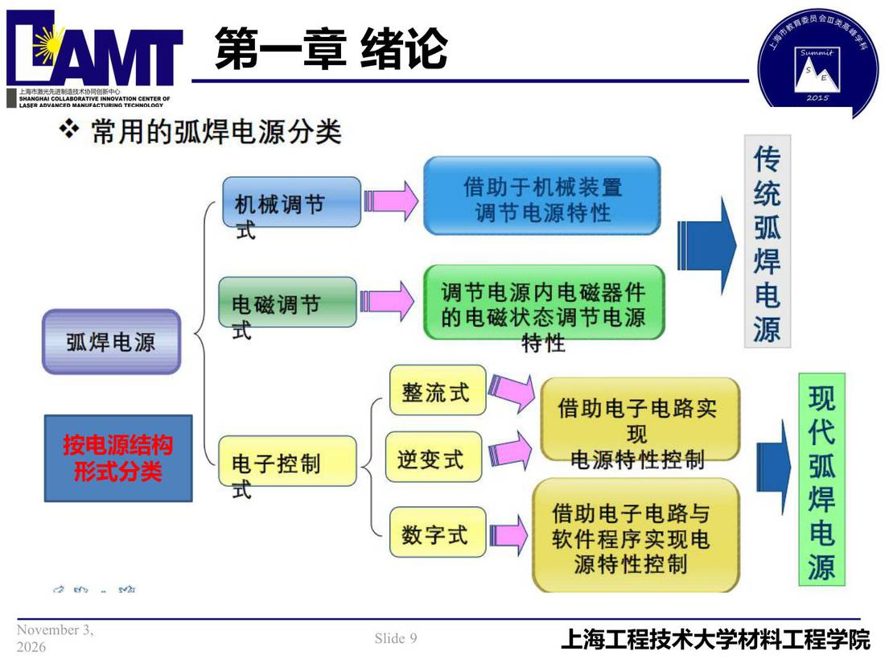

01 第1章 绪论/p009 按电源结构
p009 按电源结构
📄 原文：📄 弧焊电源 课件（PDF 第 9 页）（幻灯片 9/273；PDF 第 9 页）
按电源结构

讲义原文
形式分类
本页标红（老师强调）
- 按电源结构
- 形式分类
页面文字（OCR 机读，可能有错字，以页图为准）
※常用的弧焊电源分类 机械调节 借助于机械装置 调节电源特性 电磁调节 弧焊电源 调节电源内电磁器件 的电磁状态调节电源 特性 按电源结构 形式分类 电子控制 整流式 逆变式
📄 原文：📄 弧焊电源 课件（PDF 第 9 页）（幻灯片 9/273；PDF 第 9 页）

形式分类
※常用的弧焊电源分类 机械调节 借助于机械装置 调节电源特性 电磁调节 弧焊电源 调节电源内电磁器件 的电磁状态调节电源 特性 按电源结构 形式分类 电子控制 整流式 逆变式